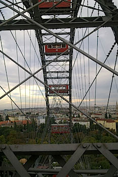
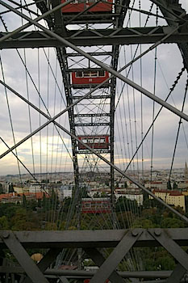

The State of Things
Update October 22nd: Hillary has been relatively stable these last days. Some days are good, we have conversations. Some days are just silence. We've had visitors, which Hillary enjoyed a lot and revitalized her mentally. And today is the reading, which Hillary is excited about.
I'm mainly writing though to give a quick update on the financial support we've received. In addition to what is being collected through gofundme, we've received ~2870 Euros (as of October 15th) through paypal/transfers/cash etc. This some came together from contributions by Christina, Matteo, Joanna, Sebastian, Lori, Silvia, Meredith, Iona, Lisa, Monika, Crony, and Jana .
Thank you *all* for all the support, financial and emotional you are providing.
Update October 15th: Hillary is physically too weak to come home. While she is not in literal pain, her state is difficult to bear, as she has trouble breathing or eating or finding a comfortable position. She requested sedatives several days ago and has since been taking them regularly. She is sleeping a lot, but intermittantly will chat with Sophie and myself. In fact, we had a pizza-family meal today. It no longer looks like she will be discharged from this hospital and we do not expect her to be with us much longer. Despite all of this, Hillary is still interested in the world. She is super excited about the upcoming readings in NYC and Vienna and thankful for all the support she is getting.
Sandra Huber has also set up a go-fund me page for Hillary, to make it easier for people to donate money. Sandra set it up after asking us for permission to do so, find it at: https://www.gofundme.com/f/help-hillary-keel-and-family. All the proceedings from that go-fund-me will go to Sophie's US bank account. Thank you to all the people who have already provided us with financial support. When Sophie and I find some time, we will post an update with a summary of donations.
Update October 6th: Hillary has cancer. All doctors say it is difficult to treat and that it is incurable. Hillary is physically weak, but mentally sharp. The situation is hard, but she has the support of her immediate family. Hillary is currently in the St. Theresia Caritas Hospital in Saarbrücken in German, but will (hopefully!) come home to Paul's place in the coming days.
How to Help
Please send your love, thoughts, prayers. The fastest way to contact her is via WhatsApp. Sophie and Paul also appreciate all messages. If you do not receive a reaction, please understand that we are all overwhelmed, but we are all grateful when we feel that we are not alone.
You could also send her a postcard to Paul's home address:
Hillary Strohmeier c/o Paul Strohmeier
Lessingstr. 24
66121 Saarbrucken
Germany
How to Help Financially
As Hillary is still covered by Austrian insurance, we were able to minimize all costs associated with medical treatment going forward. However, Hillary spent 8 days in the ICU at Beth Israel and 5 days at the ICU of Wayne Memorial Hospital -- these bills have yet to arrive. We have received conflicting information regarding her insurance status: It appears that Hillary lost all benefits connected to her job at Hunter College from the moment she announced her medical leave.
Hillary's overall financial planning is of course also disrupted. Hillary has no savings to speak of and a mortgage which she intended to pay off over the course of the next few years. She will not be able to do this and is devastated by the idea of leaving us, her children, to deal with it.
Finally, we do not have a good idea of what additional financial challenges will await us -- for example, I intend to organize a professional care-taker to help ensure her quality of life once she is back home with us. Any financial support is appreciated.
Ways to do this include sending money directly to Hillary via Zelle:
hillary[dot]keel[at]gmail.com
Sending money to her daughter Sophie via PayPal
sophie[dot]strohmeier[at]gmail.com (please select "friends and family" to avoid fees)
Direct Bank Transfer to either a US bank account or european bank account
Please contact me via e-mail for account details paul[dot]strohmeier[at]gmail.comFor checks, you can also contact Sophie and she will provide her physical address in Brooklyn.
We will publish a running tally of money received here, and we will add a list of people who contributed money (please indicate to us if you wish to be included in this list and if you wish to have the sum you contributed known).
Celebrate Hillary
There will be a reading in celebration of Hillaryin Tompkins Square Library on October 22nd, 2pm.


„Alles ist verloren, nur nicht das Glück."
“All is lost but happiness.”
«Tout est perdu sauf le bonheur.»
- Jacques Prévert